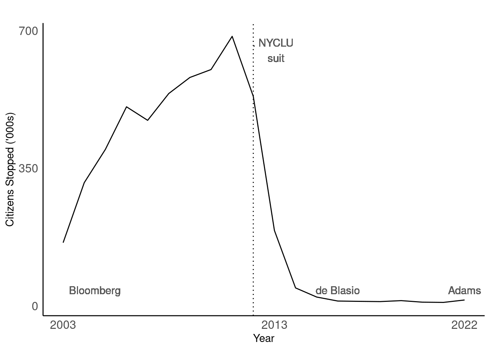

# Read in each csv file. This is a lot
# With purr csv
file_paths_csv <- fs::dir_ls("../data/2003_2015_csv_files")
file_contents_csv<- file_paths_csv |>
map(function (path){
read_csv(path)
})
# with purr excel
file_paths_xl <- fs::dir_ls("../data/2016_2022_xl_files")
file_contents_xl<- file_paths_xl |>
map(function (path){
read_excel(path)
})
# https://www.youtube.com/watch?v=An1bUIg-nVM
#See the number of rows i.e stops in each year
pre_2016 <- sapply(file_contents_csv, nrow)
post_2016 <- sapply(file_contents_xl, nrow)Stop and Frisk
An Introduction to Data Wrangling
Introduction
Nic Schwab
SDS department at Smith
Math department at Holyoke Community College
Developing a Data Science Program at HCC
nschwab@smith.edu
Why Data Science?
Math teachers will be the ones teaching data science.
Data Science lends itself to inquiry practices and active learning.
Why R?
Lots of resources available to learn R.
- Statistics
Many alternatives


Stop, Question, Frisk
Started in the 1990s
New York City Police Practice
- Police need “reasonable suspicion.”
Leads to mistrust in the police by these groups.
More about about me
I’m not Black.
I am Hispanic.
I look White.
I am not from New York City.
In this data analysis I will have limited perspective.
Race Exists
This is an acknowledgement that the construct of race exists and plays a part in the way human being interact with each other.
Schedule
Introduce you to the data.
Pose a question.
Give you data frames with data to answer the question one way.
You’ll order them with a partner.
You’ll make up pseudocode to explain data transformations.
I’ll give you the real code.
We’ll repeat the process of for 2021 data in R.
Questions so far?
The Data
Here is NYC’s stop and frisk data.
Let’s consider 2011 data
Each column is a variable
and each row is a stop
The variable names are inconsistent across years.
SQF History
years <- c(2003, 2004, 2005, 2006, 2007, 2008, 2009, 2010, 2011, 2012, 2013, 2014, 2015, 2016, 2017, 2018, 2019, 2020, 2021, 2022 )
stops_frisks <- c(160851, 313523, 398191, 506491, 472096, 540302, 581168, 601285, 685724, 532911, 191851, 45787, 22563, 12405, 11629, 11008, 13459,9544 , 8947, 15102)
sqf <- data.frame(years,stops_frisks)
sqf |>
ggplot(aes(years,stops_frisks)) +
#geom_rect(aes(xmin=2002,xmax=2014,ymin=0,ymax=Inf),fill="#003585",alpha=0.01)+
#geom_rect(aes(xmin=2014,xmax=2021,ymin=0,ymax=Inf),fill="#FFFFFF",alpha=0.01)+
#geom_rect(aes(xmin=2021,xmax=2022,ymin=0,ymax=Inf),fill="#FF6600",alpha=0.01)+
geom_line()+
xlab("Year")+
ylab("Citizens Stopped ('000s)")+
labs(title="")+
theme_minimal()+
scale_y_continuous(breaks = c(0,350000,700000), labels = c("0","350","700"))+
scale_x_continuous(breaks = c(2003,2013,2022))+
geom_text(label="Bloomberg", x = 2004.5, y = 40000, color="gray35" ) +
geom_text(label="de Blasio", x = 2016, y = 40000, color="gray35" ) +
geom_text(label="Adams", x = 2022, y = 40000, color="gray35" ) +
geom_text(label=". NYCLU \n suit", x = 2013, y = 650000, color="gray35" ) +
geom_vline(xintercept=2012, linetype = 3 ) +
theme(
panel.grid.major = element_blank(),
panel.grid.minor = element_blank(),
axis.line = element_line(color = "black"),
axis.text=element_text(size=12)
)
Questions
Which racial groups were most likely to be stopped by police officers in 2011?
What percent of the stops resulted in an arrest by race in 2011?
How do the answers to these questions change in 2021?
You will likely have more questions as we analyze the data.
Your data frames
- Little envelopes Data 2011
Put the data frames in order.
Be sure you can explain the process from one df to another. “psuedocode”
Questions about the data?
- Little envelope functions
After the frames are in order put the code arrows between each frame.
Questions about the code?